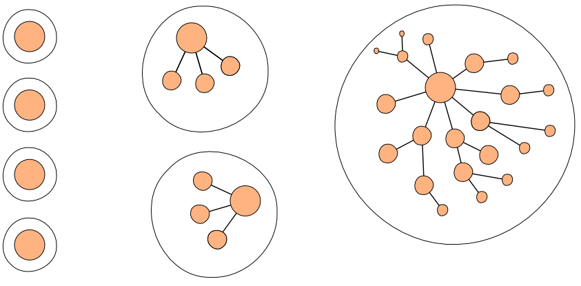

Aggregate Design
Most business domains have very interconnected Entities, sometimes up to the point where there is always a path going from any Entity to any other. We can try to minimize the number of associations in our design, and this is a good practice but it can lead to a translation loss between business and software. In a typical object model, it is difficult to clearly see the boundaries of a change. This is particularly acute in systems with concurrent access such as Web applications.
It is difficult to guarantee the consistency of changes to objects in a model with complex associations and no clear boundaries between objects. Considering every object as independent from each other is not a valid approach, but on the other side, refreshing every object because of a change is not practical. A balanced solution must be found.
To help us with this delicate problem, the Aggregate pattern can be applied. It is a cluster of associated objects that are considered as a unit for the purpose of data changes. Each Aggregate has root and a boundary which determines what is inside the Aggregate. The Aggregate root is a specific Entity contained in the Aggregate. It is the only entry-point of the Aggregate, meaning that it is the only Aggregate Entity that client objects can hold references to. Other objects of the Aggregate are only accessible through the context of the Aggregate root.
Characteristics
The following rules apply to Aggregates:
- The Aggregate root has a global identity and is responsible for checking invariants within the Aggregate.
- Non-root Entities inside the Aggregate have a local identity that is only unique within the Aggregate.
- Code outside the Aggregate can only hold references to the Aggregate root. The root can hand references to internal entities but they must only use them transiently and not hold to the reference. Value Objects can be handed without any concern because they are immutable and side-effect free.
- Only Aggregate roots can be loaded directly from the persistence. All other objects must be found by traversal of associations.
- Any change within the Aggregate boundary must satisfy all the Aggregate invariants.
Typologies
There are almost infinite ways to design a model for a specific business domain. Each of these ways will have its own characteristics in terms of performance, consistency, simplicity, etc…. Good Aggregate design is crucial to build a system that will have the desired qualities.
Consistency must be ensured at the Aggregate level. This means that an Aggregate root is responsible to check that business invariants (i.e. business rules that must be valid at all times) are satisfied. This also means that a properly designed system modifies only one Aggregate instance per transaction in all cases. This may sound strict but it should be a goal to strive for in most cases. This is the main reason behind modeling with Aggregates.
Consider the following aggregate typologies:

The left topology is not expressive in terms of business and could often lead to glorified database editors. The right topology is an object graph which is too big to scale well when modified concurrently. The middle typology is the one to strive for but it is often difficult to get it right on first try. Try to use Value Objects where possible to limit the complexity associated to dealing with entities. Aggregate design is an iterative process where Aggregates may start relatively big and then refined, iteration after iteration, as measure as business domain knowledge is gained.
Aggregates should be designed with a consistency boundaries in mind, meaning that a change (i.e. a transaction) should only impact one Aggregate instance if possible.
References
As we saw above, references between Aggregates should always be done through the Aggregate roots. But there is another rule that must be obeyed: only reference other Aggregates through their identities instead of a direct reference. This will help tremendously in limiting the scope of persistence operations (remember that we don’t want to change more than one aggregate instance at the time).
Model navigation is not completely prevented by only referencing identities. A Repository or Domain Service could be used to lookup needed objects ahead of invoking the Aggregate behavior. Those objects would be handed as parameters to the operation. An Application Service can encapsulate this logic.
Only using reference by identity may limit the ability to serve complex User Interface views where multiple calls to repositories may be needed. One solution is to use theta joins to assemble referentially associated Aggregates in a single join query.
Consistency
If immediate consistency (or transactional consistency) should be applied when changing one Aggregate, one cannot expect this to be the case for changes that spans multiple Aggregates. In this case, eventual consistency can be applied instead, where consistency will be attained after a specified amount of time. Technical mechanisms, such as event processing, batch processing or other update mechanisms can be used to this effect. But the invariants applied within an Aggregate must always be satisfied with the completion of each transaction.
Developers are usually reticent to depart from the idea that the model should be consistent at all times. But often, the business rules are not that strict and eventual consistency can be used without breaking them. It is something that need to be discussed with domain experts. This not always possible however.
Performance
Performance is one of the top reasons why we would like to break those rules, especially the one which states that Aggregates should only reference other Aggregates by identity. It is especially apparent in systems where the persistence mechanism is not as versatile as we would like and imposes its constraints upon queries that can be made or not.
If the system is required to provide a lot of complex and different sets of data to the end-user while being able to be changed transactionally, consider using a read-model that is different from the domain model and is optimized to answer those data sets. Such a read-model could even be implemented with another persistence technology, like full-text indexing, kept in sync with domain events. It may be worth the cost.
If only a few queries must be specifically optimized, it could be best to hold direct object references to other Aggregates. This must be well considered before being attempted in the light of potential performance trade-offs this could incur to other parts of the system. This should be viewed as a strong indication that they may be some issues with Aggregate boundaries and only used as a last resort.